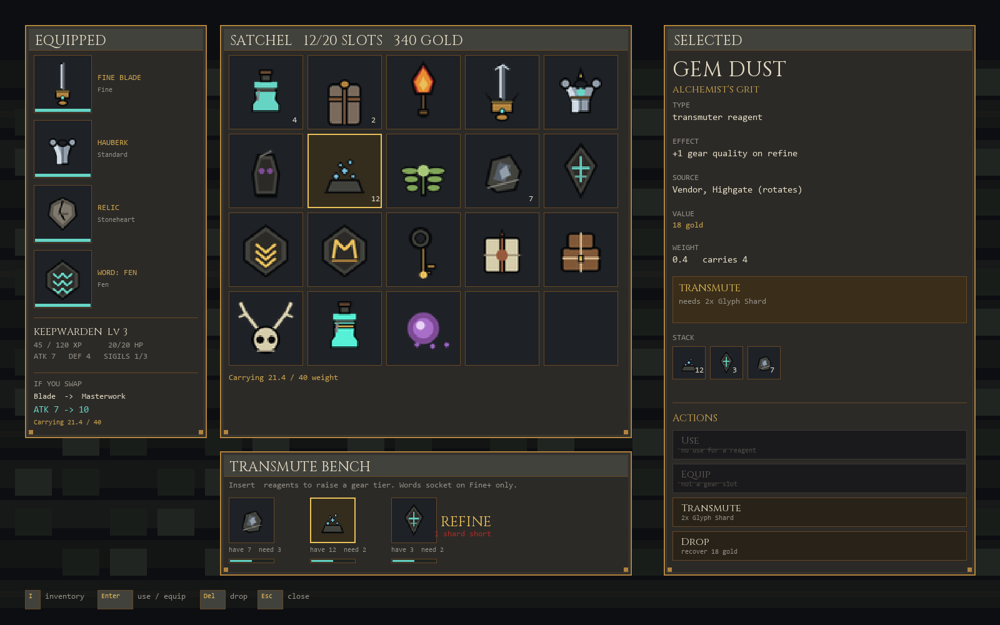
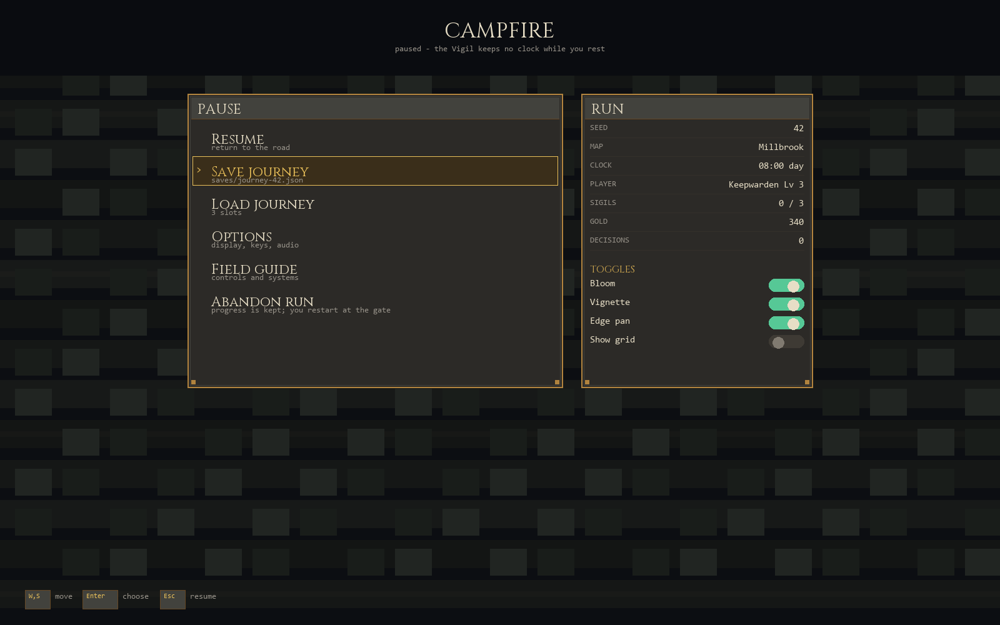
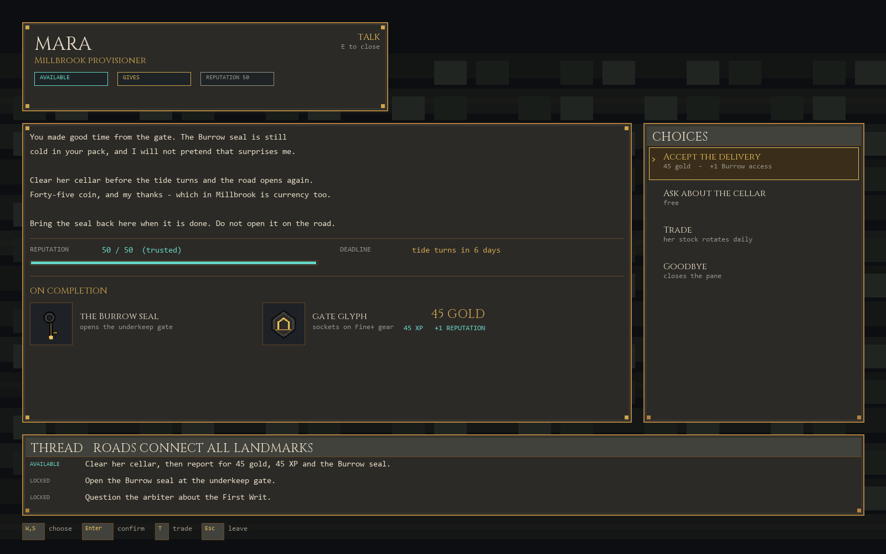

UI candidate v1
Inventory, menu and NPC talk rebuilt as designed surfaces, plus the item plate set they consume. Review mocks — nothing here is wired into the runtime.
What this replaces
Every modal in crates/view/src/modals.rs is one flat list of Line { text, role } rendered into a single bordered pane. Inventory, pause menu and NPC talk share that one code path, so all three read as the same text box. These mocks split them into purpose-built surfaces and give the item system a visual language.
Inventory
Equipped column with a live swap preview, a 20-slot satchel grid, a transmute bench, and a detail pane whose actions grey out when the selected item cannot take them.

What you wear, what you carry, what the current item does. Nothing shares a pane with anything it is not related to.
Every slot is a painted plate keyed to a core::model::Item variant. The name lives in the detail pane, not under the icon.
Disabled actions keep their row and say why — “not a gear slot”, “2x Glyph Shard” — instead of vanishing.
Menu
The campfire/pause surface: entries with their consequence on the row, and a run panel that reports the state the player would otherwise have to remember.

“Abandon run” states what happens to progress in the row itself. Destructive entries never hide their cost in a confirmation the player may not read.
Seed, map, clock, class, sigils, gold — the numbers a player actually checks before saving.
NPC talk
Speaker plate with quest state, dialogue with reputation and deadline, choices on the right, and the reward spelled out before the quest is accepted.

What you get, what it costs and when it expires are on screen while the choice is still open, not after acceptance.
The road thread persists under the conversation so the player can see what this exchange unblocks.
Item plates
45 painted plates at 48×48, one per reachable Item variant including the tiered weapon/armour sets, the three seals, the nine boss relics and the six seal-glyphs. Drawn on the UI chrome palette so they sit beside the panels rather than fight them.
Items on the player
The reason item art has to be authored rather than borrowed: an equipped item changes the character, not just a slot. The base sprite never changes — gear composites over it on the same 64-unit grid.

Blade length, guard width, pauldron mass, crest and gem all step with the tier, so gear quality is legible in the world and not only in the menu.
A torch is a light source as well as an icon; a relic is a visible aura. Both need the runtime to accept the item, not just draw it.
Player character
The player was the one asset family with no art at all — assets/atlas/actors.png holds 26 NPC keys and no Player.* cell, so every class rendered as a flat quad. These are the six orders in both body builds, authored in Blender 5.1 with a piece of gear worn so the equipped-item contract is proved by the render.


Creation is three beats now — order, body frame, boon. model::Build is presentation only: no stat reads it. It selects the model and the sprite key Player.<Class>.<Build>.
The rig carries three sockets — weapon.R in the right hand, chest for the plate, relic for the pendant. Gear authors in socket space and is rigid-weighted to the bone, so it swings with the arm instead of hanging off it.
Each order owns a weapon family — sword, gravedigger, gutterblade, oathrod, sigil focus, fenward — plus a head, a garment and a palette. The two builds share the kit and differ in frame.
Equippable items as models
Gear quality has to read in the world, not only in a menu, so every tier and every boss relic is its own model rather than a recolour of the last one.

Blade length, guard width, fuller and gem on one side; plate mass, pauldrons, belt and crest on the other. A Worn blade and a Masterwork blade do not look like the same object.
Rallybreaker through Hartshorn each have their own silhouette, hung from the chest socket so the plate cannot occlude them.
Regenerating
All of it is code-baked, so the review images and the shipped art cannot drift apart.
python tools/asset3d/examples/paint_item_icons.py --output docs/gfx/proto/ui-v1/items/items.png
python tools/asset3d/examples/make_item_icon_sheet.py docs/gfx/proto/ui-v1/items/items.png --output docs/gfx/proto/ui-v1/items/items-sheet.png
python tools/asset3d/examples/make_ui_mockups.py --items docs/gfx/proto/ui-v1/items/items.png --output docs/gfx/proto/ui-v1/mockups
python tools/asset3d/examples/make_gear_on_player.py --class Keepwarden --build Male --output docs/gfx/proto/ui-v1/mockups/gear-on-player.png
render_player_roster.py --tier 2 then --process; sheet via make_player_roster_sheet.py. See docs/PLAYER_PIPELINE.md.
python tools/asset3d/examples/make_gear_tier_sheet.py --class Keepwarden --build Male --output docs/gfx/proto/ui-v1/gear-ladder.png